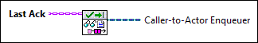

|
Last Ack specifies the Last Ack message that an actor sent. |
 |
Caller-to-Actor Enqueuer returns the reference the caller used to send messages to the actor. |
Owning Palette: Actor Framework VIs
Requires: Base Development System
(Filename: Actor Framework.lvlib:Last Ack.lvclass:Read Caller-To-Actor Enqueuer.vi)
Returns the reference the caller used to send messages to the actor. Although the reference is invalid, you can use it to identify which actor shut down.
